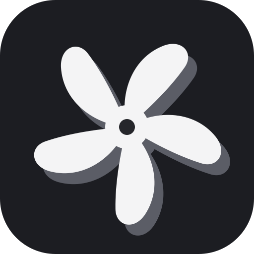
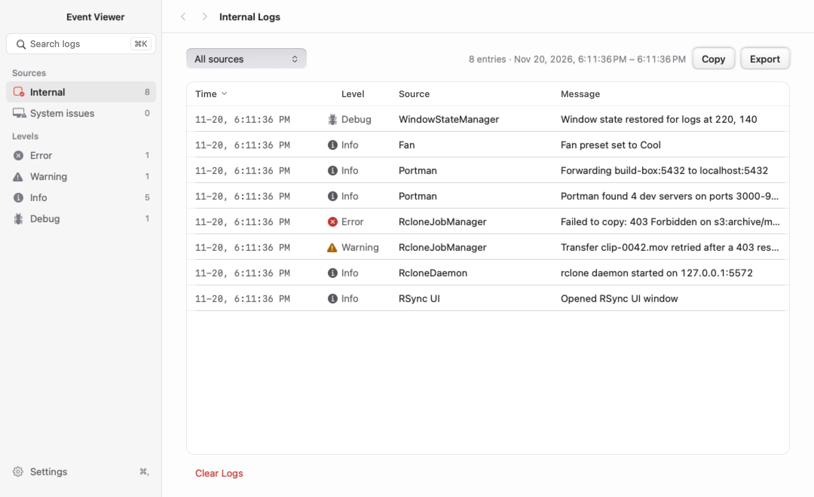
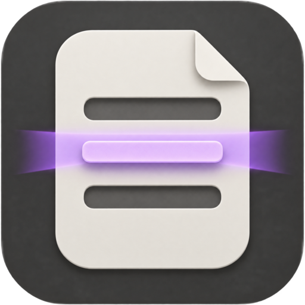

Your menu bar, doing more.
One native panel for system stats and fan curves, plus nine free tools: dev server ports, cloud copies, scroll settings for each mouse, and more.
brew install --cask samhqapp/tap/macpowertoysVersion 2.0.0 for macOS 26.2 or later. Open source under MIT.


Fan curves that stay quiet.
Pick Auto, Cool, or Max right from the panel. Draw your own Cool curve: how fast the fans spin at each CPU temperature, and the panel calls it Custom. Above 90 °C the fans ramp to full speed by 95 °C, whatever you drew.
2,140 RPM
62 °C · warm
The same curve as the Fan page below, at 1,200 to 4,840 RPM.

Portman finds every dev server.
It watches the ports your projects open, shows what each server uses, and brings ports from your SSH hosts to this Mac.


RSync UI keeps copies going.
Copy, move, or sync files to Google Drive, B2, S3, and 70 more services through rclone. Pause, resume, or retry a copy right from the menu bar while you keep working.


Change what System Settings has no switch for, such as the Dock reveal delay or the screenshot format. Every row has a Default choice, and Modified lists what you changed.

Five small tools.
Each one opens from the panel or with its own shortcut, and quits its work when you close it.

Color Picker
Copy any pixel as HEX, RGB, HSL, SwiftUI, and five more.

Text Extractor
Draw a box over an image, a video, or an error, and the text goes to your clipboard.

Event Viewer
App activity and recent macOS errors, filtered by level and source.

Awake
Keep the Mac awake for 30 minutes, until 6 PM, or until you say stop.

Ruler
Measure anything on screen in pixels, millimeters, or inches. Arrow keys move it 1 pixel.
Nine tools, plus Fan.
All free, open source, and behind one menu bar icon. Fan control and system stats are built into the panel.
 RulerMeasure anything on screen.
RulerMeasure anything on screen. Color PickerCopy any pixel in 9 formats.
Color PickerCopy any pixel in 9 formats.
Text ExtractorCopy text from the screen. AwakeKeep the Mac awake.
AwakeKeep the Mac awake. Input DevicesScroll settings per device.
Input DevicesScroll settings per device. PortmanDev servers and SSH ports.
PortmanDev servers and SSH ports. RSync UICloud copies with rclone.
RSync UICloud copies with rclone. Event ViewerApp logs and macOS errors.
Event ViewerApp logs and macOS errors.- Mac TweaksHidden macOS settings.
Install it in one line.
brew install --cask samhqapp/tap/macpowertoysVersion 2.0.0 · macOS 26.2 or later · Signed with Developer ID and notarized by Apple · No tracking · MIT license